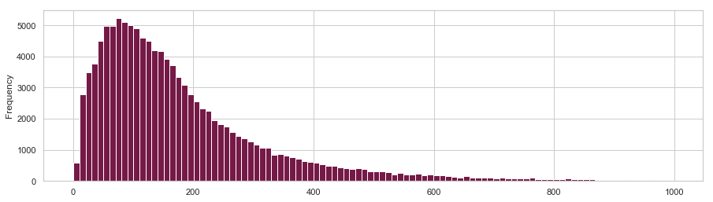

The National UFO Reporting Center (NUFORC) is an organization in the United States that investigates and collects UFO sightings since 1974. The reports are publically available. We analyzed the reports in order to answer the following questions:
The NUFORC checks each reports for fakes or hoax and comments them accordingly. The reports are classified by their occurred date, location, shape and duration.
To get a taste for an UFO report, here are two typical UFO encounters:
Triangle UFO in Orlando. Saw something in the distance. Stared at it for about a minute and it began coming closer. It was triangle shaped and it started to follow me and lower in closer to the direction i was walking. I turned around and called someone close by to pick me up.
Orb of light crosses the sky and turns sharply in Chicago Suburbs. Leaving my office after working well into the night, an amber orb of light moved across the sky above me to the south of my location and then seemed to become multiple lights (still in one unit) and became more white colored. The light blinked at an interval but not like any plane I’ve seen. It made no sound yet was only a couple hundred feet above ground. It then turned west and south and I lost sight of it for a few seconds behind buildings as I drove. It then came flying back north right over me as I drove West it. Then it got higher in the sky and trurned sharply east towards Chicago and paralleled interstate 90 (which I was now on going east as well) and it traveled around 90-100 mph before blinking out of site ahead of me. I noticed several other small lights in the sky. I felt some moved and were planes others may be stars. But this area doesn’t get much visibility to stars because of light pollution. This is O'Hare airport area, but this was not typical for flight patterns and it turned to fast and was too small to be a plane. My cars engine light and and lights went on for the first time ever (the car is in great shape) after the incident.
Reading the above report gives you the impression, that these might be explainable with common sense, like air craft or meteorite or some sort of seasonal data. Thus we are looking deeper into the possible explanations for reports in general.
The previous analysis only covers spikes, which are create themselves due to the bias of reporters. Thus, it is not an explanation per say of the reports, but of the reason why they aggragate at these specific dates.
To look more in depth in special cases/other peaks, we are plotting intensity of occurrence over the period 2004-2007 for all the months. #interactive plot
After some manual searching for the peaks we found reasons for some of them, while other were reported in the news as UFOs as well.
By manually checking the days of the peaks we could find reasonable explanations for most of them, such as rocket launches, space station fueling missions, meteorites, etc. But at the same time some peaks didn't leave any seeming correlation with events that could be explainable from earth/space weather or known human made flyers.
For sentiment analysis we are looking into what types of emotions and proceses can be apprehended from the reports. Though to understand that we must look into the distribution of the reports in general. Meaning, what is the distribution of word count within the reports. 
We can clearly see that the word count follows a normal distribution with a mean shift to the left
To see what kind of emotions are more prevalent within in the reportings, we are further looking into the percentages of emotions/perceptions found within the reports.
We can see that both positive and negative emotions are rather commonly found in the reports, as well as 'tentative' and 'certain' cognitive processes. Which is why we are looking into these emotions together with the senses of 'hear' and 'feel' and how are they showed for the most popular shapes.